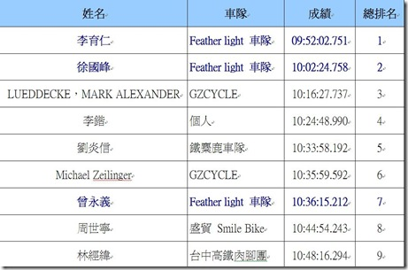
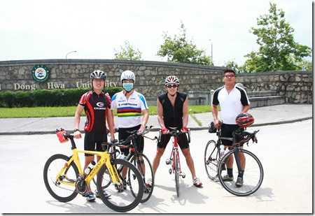
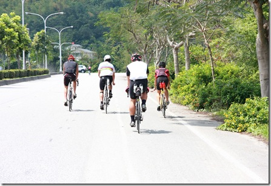
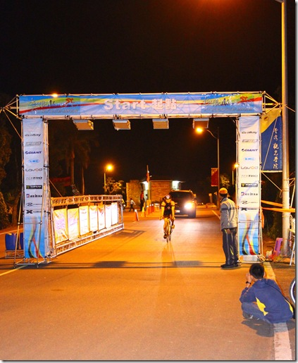
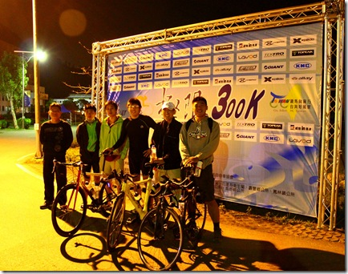

計時車 300 公里騎乘札記
######
#####
######
¤活動：NeverStop 系列活動-洄瀾極限挑戰 300K

¤日期：2010 年 3 月 27 日
¤夥伴：黃志榮、曾永義、李育仁、徐國峰 －－Feather Light 車隊
¤里程：305 公里
¤總騎乘時間：10 小時 02 分 24 秒(總排第二名)
¤計時車配備：廣群計時碳纖車架、Vision 休息把、FSA 封閉式碳纖大盤、碳纖板輪。
出發前合照留念
中午十二點多，我們在東華大學志學門前合照，天空中飄著幾片像霧一樣的薄雲，陽光從四面八方包圍身體，但卻一點也不熱。接著就準備騎往位於臺灣觀光學院的會場。

#####
#####
前往會場
志榮幫忙裝上的板輪好的沒話說，只要稍微輕輕踩踏車身就一直往前移動。騎出東大旁小路，轉到台九線，前往觀光學院的這段路是我再熟悉不過的上學回家之路。研究所最後一年，住在觀光學院附近的鄉間道路旁，每天就是來回地騎著這段路。有時候必須當天來回騎上兩三趟，也跑過好幾回，在心情煩悶的日子裡也曾在這段 9 公里左右的道路上散步回家。

在溫暖的陽光下等待出發
離開始的時間還有半個多小時，志榮去拿報到的東西，阿義去拿水和補給品，我則在校園裡的水圳旁享受溫暖的陽光，同時也暗自提醒自己不要曬過頭了，一直喝水，以免開始前水分就開始從身體裡溜走。
#####
十二點五十分，我們前往起點出發。但前面已經塞滿了看不到盡頭的自行車長龍。因為這次是用晶片計時，通過起點下方的感應器才會開始計時，先出發或晚出發都對個人成績沒有影響，所以我們就很悠閒地聊著天。隊伍慢慢地前行，因為距離是超長的 300 公里，平常比賽前會加快的心跳在當時卻一點也沒有緊張感，只想要好好享受這場比賽，享受花東縱谷的風和陽光。
在等待出發期間，我四處張望。隊伍像交流道前的匣道管制入口，選手們牽著車子慢慢往前。幾分鐘後，起點已經出現在視野範圍。大家守秩序地一步步牽著車往前推進。少了機器與引擎聲之後，雖然是大排長龍的隊伍，但當時卻有一種美好的安靜與耐性在這幾千人的隊伍中。車陣往後延伸下去，消失在轉角處。我想，「這是多麼美好的塞車，四周的空氣只有愉悅與舒緩，沒有一點急躁與油煙味」。每個人的表情都是興致勃勃，一點都不以接下來要騎的 300 公里為苦的樣子。
終於能把期待許久的熱情發洩成前進的動能
下午一點八分。終於輪到我們出發了！志榮、胖胖、阿義和我這群 Feather Light 車隊第一次比賽出征，終於能把期待許久的熱情發洩成前進的動能。但因剛開始的產業道路太過狹小，右方車道排了滿滿的自行車，無法順利前行。此時，阿義在前方飛快地靠往左側對向車道，從一旁的自行車陣飛奔而過，我們緊緊跟著。此時我握在 Vision 飛機把的機翼位置上，仍可以輕巧地跟車與閃過對向來車。
一開始要忍耐，不要騎太快
很快地來到寬敞的台九線。我清楚地知道剛開始往南的路是緩上坡，理性下達要克制速度的指令，但身體和雙腳都興奮地想好好地活動一番，心跳不自覺地加快，大家的速度也在不斷地提高。我提醒著：「一開始要忍耐，不要騎太快」。

這段在台九線上往南的旅程並沒有很長，如果就這樣一路向南騎下去的話就可以直抵台東鹿野脫線牧場，但這樣來回只有大約 270 公里左右，而且白天的台九線車輛很多，又有許多十字路口。所以主辦單位規劃我們從台十一丙線繞往一九三縣道，再從玉里接回台九線，是很細心的考量。
盡情狂飆的台十一丙線
從台九線往左繞個彎轉向台十一丙線，我們開始往北騎，要一直騎到花蓮大橋才轉往一九三縣道。這段路是之前在東華鐵人隊時每週經常練習的路段之一，當年教練都是要我們從志學開始從反方向騎，長達 17 公里的平緩上坡非常討人厭；但相對來說，今天是從台十一丙的尾巴開始往下溜，又是比賽剛開始而已，所以感覺愉快極了！
繞到台十一丙後，就立即變到大盤，改成低轉速，有技巧地把體重交替地轉移到踏板上，把速度提高，心跳也盡量維持在每分鐘 150 以下。這是我們可以盡量超過其他人的路段，因為如果這裡不趕快多超過一些車的話，到了一九三會被塞住而影響大家的配速。我們有如此的共識。所以一開始必須先多甩開一些人。此時 FSA 的封閉式大盤和板輪就形成最有效的武器，在這段緩下坡路段，只要輕踩就可以很輕易地把速度保持在四十以上。板輪和 200 磅高壓的管胎在路面上流暢地向前滾動，在這種長距離比賽剛開始時，絕對必須當成放鬆的熱身來騎；所以我盡量使用大盤以低轉速在適當的時機節制地使力，用來對抗風阻就好；尤其當胖胖或阿義在前面時，車子與身體就會很自然地咻咻咻地前進，心跳只要維持在 120~130 就可以保持時速四十以上，此時在 FSA 封閉式大盤上踩踏可以感受到無與倫比的紮實感。
開始進入海岸山脈腳下的一九三縣道
17 公里的高速行駛很快地在轉向花蓮大橋時結束。在花蓮大橋上我們朝著海岸山脈筆直地騎過去，碰到山脈左轉是濱海台十一線；我們則是從橋的尾端右轉，開始進入海岸山脈腳下的一九三縣道，上上下下的狹小產業道路對計時車與休息把而言是一大挑戰，我計畫在這段路要好好地保存體能，「要一直喝東西一直填食物進身體裡，水、電解質和醣類都不能在這段路程中消耗太多。體重絕對不能掉。」所以就盡量看風景，享受著田園景緻與山風。
一路上仍是過往練習時的景物，每一個坡、每一個彎都摻雜著練習時的部分回憶。哪個轉彎之後是下坡，哪間農舍之後是上坡，坡有多長有多陡。每經過固定的路段，接下來的道路資訊就會先出現在腦海中，過去練習情景也會重現，以非常溫暖的味道重現出來。
正當我享受過往時，後輪忽然出現可怕的噪音。一開始以為是別人的車，後來阿義叫我趕快停才發現是自己車後綁在煞車線上的燈管卡進後輪鋼絲。一停車後阿義很快地把它們拔掉，試騎過後完全正常才放下心來。那時真是嚇一大跳，以為車子出事了！真是感謝阿義！也因此跟志榮會合了，三人就一起順順地騎著。
一九三線上的 Vision 休息把
常聽車友們說休息把不適合在山區與多彎道的路段使用，但我自覺 Vision 的休息把倒完全沒有這個問題，在上坡路段，可以很容易擺動車身讓身體左右交替轉移重心；往前輪延伸的支臂對操控性的影響不大，只要習慣後，一九三的多數彎道都可以流暢地切轉。唯一的問題是，在坡度變化多端的路段上，需要把手伸到前端的變把來切換檔位，會讓踩踏失去原本的流暢度。但這是每個空氣動力手把會碰到的問題，騎久了之後，原本的不適感早已消失無蹤，現在已經可以快速且流暢地在山路上換檔上下坡道。
#####
想撒尿也不能停
在一九三的 72 公里處，Feather Light 車隊的補給車已經在那等著。我一停下來，Simon 和姐夫就馬上幫我換過水壺，在背後塞滿補給品。雖然我想停下來尿尿，但想說不要浪費時間好了，就直接騎走，在自行車上解決。溫暖的尿液從褲管流下，原本存在身體裡的緊繃感也瞬間消失，下半身忽然輕鬆很多。在這 305 公里路上，因為一直喝水的關係，幾乎每 30 公里會尿一次。尤其到了晚上，從褲管出來的溫暖尿液不知道為什麼可以讓心情安定下來。
#####
抵達第一驗證點
沒多久後就看到遠方出現大會的工作人員引導選手進入第一個驗證入口，順著指引騎進去，經過晶片感應器，拿出證明書給工作人員蓋章，其他選手很悠閒地在一旁休息，但自覺一路上吃喝夠多了，身體也完全不累，就直接騎往出口。一騎出去，遠方的道路就已經看不到其他選手，「要開始要孤軍奮戰了！」我想。
自己獨騎了半個小時後，前方開始有幾個前行的小點，慢慢開始追過一些人。其中有一位車友跟在後面一段時間後，我問他想不想跟我輪車，一人一分鐘，他爽快地答應了，我們就互相輪了半個小時，但後來他停下來補給我就只好再一個人騎。此時也忽然驚覺自己的水也不夠了，就打電話給 Simon 求救，他問我現在人在那裡，才發現自己在不自覺中已經騎到台九線上，海岸山脈已經跳到可以一覽全貌的遠方。路面變得平坦筆直，前方的道路既沒有十字路口，也沒有視野不清的死角，開始可以安心地趴在休息把上踩踏，把心跳維持在 145~150 之間以既不痠也不喘的舒適自覺踩踏，超過的人愈來愈多。
每次只要一趴在休息把上騎乘，就會感覺與車身合為一體，兩者一起在道路上切過風前進；尤其這次志榮幫忙裝上的板輪，使切開風的過程更為順利，幾乎不用費什麼力氣就能維持速度。在平坦的路面上時，流暢度好得嚇人，不知是幾乎沒有摩擦係數的花鼓，還是 200 磅胎壓的管胎所帶來的效應。這部志榮幫忙組裝整理完，由廣群計時碳纖車架、Vision 休息把、FSA 封閉式碳纖大盤與碳纖板輪所組成的計時車，在平坦的路面上的空氣動力效應與舒適性簡直棒極了！Vision 此款尾端上翹型的休息把，讓我趴在休息把上騎乘時具有更佳的操控性，可以流暢地閃路面的坑洞或直接作小角度的轉彎。感謝志榮一開始就幫我選這款上翹型的，而非傳統的直線型飛機把。
夜幕降臨
天色漸漸暗了，我試著彎腰把裝在前快拆上的車燈打開，但它卻怎麼也不亮。應該是接觸不良。在許多沒有路燈的台九線上，以無前燈狀態騎乘會非常危險，但當時也不知該怎麼辦才好，只能一直往前騎下去；而且 Simon 的補給車還沒開到，已經快一個小時沒喝水了。也不敢再吃補給品，因為沒有配水的話血醣會升得太快，反而會有反效果。所以為了安全與健康起見就放慢速度，一邊等補給車，一邊仔細確認路況再往前騎。還好不久後，阿義到了！他與一大群車隊從後面駛來。此時天已全黑。我趕緊跟上他們，借用車隊集體的照明，在集團裡也讓我們在夜間的台九線上變得比較醒目，如此騎起來終於安心多了。阿義說他也沒有水！我們就在夜間跟著車隊快速前進。是接近十人的車隊，如此在夜間跟車，不得不打醒十二分精神，怕一分神就會發生意外。
折返點－－台東鹿野脫線牧場到了！
在集團裡騎車很輕鬆，速度也提高許多。不過相對也很危險，有一兩次前方車輛忽然煞車害我差點撞上。晚間視線不佳，精神一刻都疏忽不得。因為速度提高，精神又處於緊繃狀態，一回過神來阿義就喊說脫線牧場到了。不知不覺間，原本遙遠的折返點到了！不知不覺間，已經騎了 170 公里。接近一場超鐵的自行車距離，「我還能跑一個馬拉松嗎？」
補給車與胖胖都已經等在那！我和阿義趕緊去蓋印章與通過晶片感應器，牽著車來到 Feather Light 補給車旁吃了一個三明治，一根 Snickers，喝了一大口水，吞下一顆維生素 B 群，把三個水壺補滿。姐夫則趕忙幫我換上新的車燈。回程可還有 135 公里的路程要騎。胖胖說他是第一批抵達的五位選手之一，目前還沒有人從折返點出發。我們稍微休息一會，填飽肚子之後，兩人就一起開始折返。咦~~阿義怎麼不見了！
回程的路總是特別輕鬆！
折返後，心情頓時覺得愉快許多。而且因為一直注意補給，所以身體狀況非常好。兩腿感覺很「Fresh」！剛開始都是平路，所以自己先領騎讓胖胖跟在後面。我們不確定是第幾個開始折返的，但應該前面還有人才對。但路程還很遠，所以不用著急，仍以感到舒適的配速前進。此時對我們兩人能首先騎進終點的期待開始慢慢具體成型，原本覺得應該沒那麼簡單，但我和胖胖的狀況還很不錯，「應該可以喔！」當時這麼覺得。
高大的外國騎士
不久後，前方出現自行車特有的後方閃示燈，追上一看才發現是阿義，他說前面還有一個人。我們就一起組團前行。剛換上的前車燈又開始閃爍不定。我彎下腰按了它幾次，卻沒什麼反應。只好不管它，打起精神來踩踏，專心控制雙腳踩踏時緊繃的時機，盡量不要太過用力。因為還有好遠的路要騎。正當我們三人順順前行時，後方突然來了個強力照明燈，一開始以為是摩托車。當它快速且無聲地超越我們身旁時才發現是一個高大的外國騎士，也是騎著計時車，趴在休息把上很快地溜到前方去。我趕緊跟著。這麼一跟，我們就一起騎了近八十公里。
#####
追上第一名選手
跟了一段路後，我沒說什麼就加速上去，騎到他前方，然後保持他原本的配速，手指後輪示意換我領騎擋風，就這樣，不知名的高大外國人、我和胖胖三個人開始輪車。領騎的時間並沒有固定，我若覺得順的話就會在前面多騎一點，累了就換下來休息。輪車讓大家的速度又提升不少，所以不久後，第一名的選手就出現在眼前。
三人輪車小組
我們追上，他跟在由我們所組成的小集團後面，三人輪車小組仍繼續有默契地進行著，有好幾次我退下來時意有所指地望向他，「要不要也上去帶一下啊？」雖然沒真的說出口來，但退下來後等他上去的意圖非常明顯，但他一直不上去，我只好就趕緊繼續跟上他們兩個。三個人輪車的過程中都非常流暢，速度也都保持地很好。因為一路上幾乎都是平路，所以腿部肌肉一直都很新鮮，沒有痠痛感，心跳也一直保持在 130(次/分)左右；領騎時碰到緩上坡會攀升到 145~150(次/分)，但那也是在可以忍耐的範圍內。
在這段時間裡，因為輪車的關係，精神反而變得更專注，時間反而流逝得更快，不知不覺間就來到一九三的終點處。因為台九線在此處轉向左邊，要通過玉里大橋才是。直走是接回白天騎乘的一九三線。因為兩邊的路一樣大條，外國人以為是往右切過去，我趕緊大喊「是左邊！」才想到他聽不懂中文，但還好他及時轉向。
通過玉里大橋後，轉進玉里市區，車子不多。我們仍然快速輪車前進。此時離舞鶴的爬坡路段只剩下 13 公里左右。我提醒胖胖舞鶴接近了。爬完舞鶴台地，就只剩下 50 公里，而且幾乎是平路。接近爬坡路段時，Feather Light 補給車開到，我們放慢速度換水壺與吃些東西。外國人很快地往前騎去逐漸變成黑夜中的亮點。胖胖問我什麼時候該衝，我也不確定。「外國人很高大，衝刺一定很強，要小心！」我說。接著，我們就來到既期待又害怕的爬坡路段。
舞鶴高台
這段路騎過四次，跑過一次，坐車經過則不知有多少回了！一直記得是一段雖然有點陡但很短的坡道，雖然是計時車但並不擔心。跟著胖胖，一下子就追上外國人，把他甩在後面。這段雖然是山路，但路燈很明亮，也很清楚這只是短程的上坡，所以心情反而變得愉快起來，就跟著胖胖一直往上騎去。不過後來胖胖加得太快了，就讓他自己騎，我就依著自己的配速爬坡。沒多久就來到第三個檢查站。
進站後有人靠過來拍照，還問我要不要吃關東煮，但我只喝了一口水就接著騎。山坡路段一下子就騎完了，沒多久之後雙輪下的路又變得筆直地看不到盡頭，胖胖不見蹤影，連小點都看不到，往後看也不見外國人車燈。「最後 50 公里，接下來要一個人騎了！」我想。
How much climbing in front?
趴在休息把上，速度慢慢增加。但心跳已經怎麼也催不上去了，一直停留在 130(次/分)左右。此時，外國人忽然從身後追到，我趕緊又貼上去。但他的速度真的很快，跟緊時心跳和呼吸都變得很勉強！幾分鐘後，我勉強衝上領騎。但那已不是我當時能負荷的配速了，就慢下來。他似乎也很累的樣子，我猜是他追上時也耗費不少體力。很累的兩人就降低速度互相輪車。抵達光復前又有幾段緩坡，「How much climbing in front?」他問。他似乎相當不善爬坡的樣子，我回答：「This is last one.」他笑了幾聲。我想他以為我在開玩笑吧！但我是說真的，這段路我很熟悉，接下來真的就只有上橋時的緩上坡！
可怕的疲累印象
接近光復時，是沿著鐵路而行的平坦路段，他又開始加速。我覺得累了，就讓他先行。「因為還有好遠喔！」雖然熟知道路可以有計畫地配速，但反而在精神上陷入疲乏的窘境。過了光復之後的每一個點，都已經成為過去的「疲累印象」。
環境心理學的研究學者指出，人的大腦對於熟悉的路線通常會覺得比較遠；也就是說，同樣的路線，第一次騎時因為不知道接下來會碰到幾個轉彎、上坡有幾公里、何時會下坡、何時有髮夾彎，所以會比較有新鮮感，也會覺得路途沒那麼遙遠；但反之，愈熟悉路線的人因為已經知道所有的轉彎與上下坡的位置，大腦會自行運作，自行定位，因此在精神上會覺得疲乏。已經在花蓮練了三年的我當然是屬於後者。我也想忘掉這種可怕的路線資訊，但已經重複騎了同樣路線那麼多次之後，「遺忘」實在是不可能的事，所以我只好總是盯著路面，或想其他的事（這樣大腦就會暫時停止自動想起路線的事）。那種精神上的疲乏感，是很可怕的，勢必要把注意力轉移到「正在做的事情」之外，就我來說「正在做的事情」是騎車，這時反而不能專心，要分心到其他的事情上。
衝刺的理由
因為熟悉，每個路段間都變得好遙遠。無力感開始從大腦蔓延到雙腳，不想再騎的心情怎麼也壓不下來，更別說是加速了！雖然腳不會痠，體力也還有，但變得只想快點騎到就好！「只要騎到就可以停下來休息了！」開始以這種理由鼓勵自己騎快點！
從兆豐農場開始到台灣觀光學院這段 9 公里的路，才終於能以這樣的理由開始衝刺。雖說是衝刺，從前能以時速 50 公里返航的路線，在當時也只能以 35 公里上下的速度前進。不得不承認，當兵這段時間的體能真的下降很多，尤其是自己的無氧耐力與爆發力。但那也沒辦法，有什麼就用什麼吧！就算只能這樣衝，就這樣吧！「今天沒有爆胎、沒有受傷、沒有抽筋、沒有脫水、沒有低血醣地騎到這裡，已經很滿意了！」。

終點？真的到了嗎？
終點前的 Finish Line 有點冷清。「是不是搞錯了呢？」也許還要繼續騎也說不定。看到志榮大哥站在那，趕緊問他「到了沒啊？」他說到了，才終於安心地下車。看到他們安心地笑著道恭喜，才意識到真的騎完了！「安全地，以 10 小時 02 分 24 秒騎完全程」。

後序：
在這段路程中最要感謝的是好友兼贊助的志榮。感謝他找我來這麼棒的比賽，還幫忙把車子設定到最佳狀態，借我最棒的板輪。還要感謝帥氣 Feather Light 補給車上的 Simon 與姐夫，沒有你們專業級的補給，我們不可能健康地以這麼快的速度騎完。最後要謝謝在終點等我們的大家，抵達之後有你們的幫忙牽車、遞水遞食物；聽著你們溫暖的聲音時，原本最後幾十公里的疲累感就不知消失到什麼地方去了！